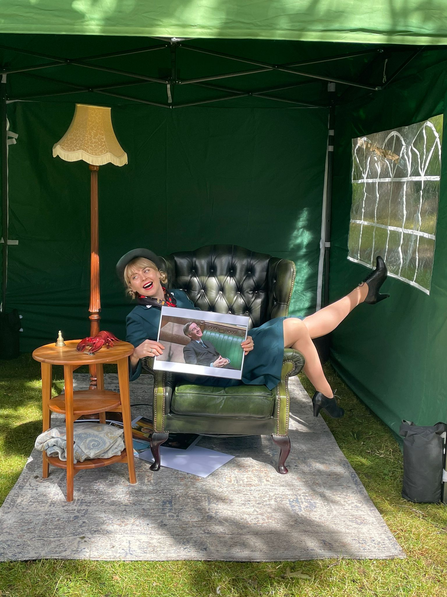

Would you Like a Seat? (2022)
Dora Colquhoun was commissioned by DASH arts and supported by the Liverpool Biennial to take part in WAIWAV. Colquhoun is one of 31 artists who created an intervention on the 2nd of July to celebrate 102 years of the first ever Dadaist exhibition in Berlin.
Colquhoun created the fictional NBFS The National Bureau For Sitting. The intervention involved assessing members of the public to see whether they can take a seat in a very comfortable chesterfield chair.

The concept behind ‘Would You Like A Seat?’ Is about access. Looking at archaic systems that enables some to thrive and some to survive. In the past 10 years there has been an increase in slanted benches, barbwire in shop fronts and intentional gaps in bus shelters. This is to discourage a person shelter and a spot to rest. It is saying ‘you are not welcome.’ Colquhoun wants to take the mundane everyday action of sitting, and frame it as a prestigious act of luxury.
The NBFS will assess people in the same way a person may be assessed for PIP or be assessed to seek asylum, or the many other systems we have in place to assign meaning and value to a person. The NBFS is a body of professional seat sitting assessors. Let’s regulate sitting one cheek at a time!
View 'Would You Like A Seat?' Image Gallery